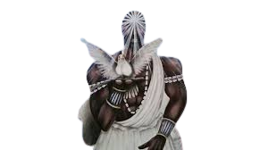

Originário da mitologia iorubá, Oxalá é cultuado como o maior e mais respeitado de todos os Orixás do panteão africano – não por ser hierarquicamente superior, e sim por ser o mais velho, representando a ancestralidade. É associado à criação do mundo e da espécie humana.
 Quem é o Oxalá? Oxalá é um dos orixás mais importantes das religiões afro-brasileiras, o candomblé e a umbanda. Trata-se de uma entidade divina andrógina, que representa as energias da criação da natureza e personifica o céu.